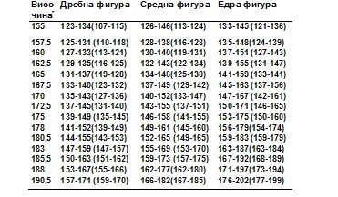

Фитнесът и храненето, могат до огромна степен да променят визията ви, ако се използва вашата конституция (и излъчване), природата е определина какъв тип сте, но в разумни граници може да го промените. През 1940 г. д-р Уилям Шелдън, професор от Харвард, формулира тезата си, че при хората се срещат три типа телосложение: ектоморфен, мезоморфен и ендоморфен. Най-общо намерението на д-р Шелдън е с помощта на типа (соматотип) да разбере дали телосложението и физическата структура имат отношение към характера на човек. В днешно време класификацията се използва за определяне на точния вид диета и физическа активност според типа телосложение. Когато човек е наясно към кой соматотип принадлежи може по-лесно да избере индивидуална програма за натрупване на мускулна маса и премахване на излишните килограми.
Ектоморф
Един ектоморф е типичен слаб човек. Ектоморфите имат лека конструкция, с малки стави и чиста мускулна маса. Обикновено ектоморфите имат дълги и тънки крайници, с жилави мускули.
Плешките им са склонни да бъдат тънки, с малка ширина. Типични черти на един ектоморф са:
◾Малка и “деликатна рамка” и структурата на костите
◾Това са класически хардгейнъри – трудно покачващите телесна маса
◾Плосък гръден кош
◾Малки раменете
◾Много бърз метаболизъм
Виждате, че ектоморфите много трудно да наддават на тегло. Те имат бърз метаболизъм и обмяна на веществата, което кара тялото са изгаря калориите, при това много бързо.
Ектоморфите трябва да консумират огромно количество калории, за да наддават на тегло.
Тренировките трябва да бъдат кратки и интензивен, с акцент върху големите мускулни групи. Добавките за мускулна маса са определено препоръчителни, да не казвам задължителни.
Ектоморфите трябва да ядат и преди лягане, за да се предотврати катаболизма на мускулите през нощта. Заради екстремно бързият метаболизъм. И обратно – ектоморфите, могат да губят мазнини много лесно.
Мезоморф
Тялото на мезоморфите има голяма костна структура, големи мускули и естествено атлетично телосложение. Мезоморфната конституция е най-добрият тип тяло за бодибилдинг, фитнес и спорт, изобщо.
Смята се, че е доста лесно свалят килограми и губят тегло. Тези тела са естествено силни, което е перфектната платформа за изграждане на мускулна. Типични черти за мезоморфа са:
◾Атлетично тяло
◾Твърдо тяло с добре определени и дефинирани мускули
◾Правоъгълна форма на тялото, изобщо
◾Силни мускули, освен детайлизирани
◾Лесно покачване на мускулна маса
◾Свалянето на килограми става при тях по-лесно, дори и от ектоморфите
Тренировките при този тип тяло трябва да включат базови фитнес движения, достатъчни са, по-малко кардио и стречинг.
Ендноморф
Тялото на ендоморфа е солидно и като цяло “меко”. Ендоморфите наддават мазнини много лесно. Ендоморфите са обикновено с по-къси мускули ръцете и краката. Мускулите като цяло по цялото тяло са силни.
Типични черти на ендоморфите са:
◾Меко и заоблено тяло
◾Мускули и мазнини се трупат едновременно и много лесно
◾Като цяло този тип структура е кръгла тип физика
◾Трудно се губят мазнини
◾Сравнително по-бавен метаболизъм
Както казах вече, когато става въпрос за мускулна маса и основен период, примерно, е много лесно тези хора да наддават на тегло. За съжаление голяма част от това тегло е мазнина, а не мускул. За да изгорите мазнините, ако сте ендоморфи, трябва винаги да тренирате сърдечно-съдовият апарат – кардио, както и да имате работа с тежести.
Обикновено добавките не могат да бъдат необходими чак толкова, докато човек има висок прием на протеини в диетата си. В този случай, вид омега мазнини и липотропен бърнър са желателни,
за да не се омазнява тялото.
Екто-мезоморфите
Екто-мезоморфите са предимно ектоморфи, с някои черти на мезоморфите. Като цяло, те са с висока структура и с повече мускулна маса, отколкото истински ектоморфи, но все пак по-малко от истинските мезоморфи или мезо-ектоморфите
Типични черти:
◾Малък обем и структура на костите
◾Възможност да се изгради повече мускул, отколкото истинския хардгейнър
◾Плоски като визия на мускулите
◾Средна ширина на рамената
◾Относително бърз метаболизъм
Те имат бърз метаболизъм, който изгаря калориите лесно. Екто-мезоморфите се нуждаят от огромно количество калории, за да наддават на тегло, но не се нуждаят от драстично дефицит, за да отслабнат.
Тренировките им трябва да бъдат кратки и интензивни, с акцент върху големите мускулни групи. Добавките категорично се препоръчват, когато искат тези хора целят мускулна маса.
Мезо-ектоморфи
Мезо-ектоморфите имат средно до голяма костна структура, средно до големи мускули и естествено атлетично телосложение. Те са склонни да имат малко по-трудни моменти по време на покачването на мускулната маса,
отколкото техните колеги мезоморфите, но все пак това е благоприятен соматотип за развитие на тялото и опорно-двигателната система. Типични черти:
◾Атлетично тяло
◾Правоъгълна форма на тялото
◾Мускулите до някъде се покачват лесно
Мезо-ендоморф
Те имат голяма костна структура, големи мускули. Те са предимно мезоморфи, с леки ендоморфни тенденции. Типични черти:
◾Атлетично широки рамене
◾Големи мускули, които са до известна степен определени генетично
◾Правоъгълна форма на тялото
◾Много сила
◾Чувствителност към въглехидратите – трябва да се внимава с тях.
Мезо-ендоморфният тип тяло отговаря най-добре да тренировки с тежести и кардио.
Ендо-мезоморф
Ендо-мезоморфния тип тяло е солидна структура. Ендо-мезоморфите са предимно еноморфи, с тенденции към мезоморф. Ендо-мезоморфите са обикновено с по-къси крайници и с дебели ръце и крака, но с малко по-малко
коремна мазнина, отколкото колегите от групата на ендоморфите. Мускулите им са силни, особено в горната част на тялото и краката. Типични черти:
◾Меко като визия и заоблено тяло
◾Сравнително широки рамене
◾Покачване на мускули и мазнини – много лесно
Това е най-общо описание, но както се виждате важно е да познавате конституцията на собственото си тяло. Така сами ще определите кой спорт и коя диета е полезна за вас. Например – дали един ендоморф би могъл да прави интервално кардио (HIT), колкото и добро да е то? Едва ли, ще натовари излишно сърцето и тялото си. Все пак спорта е и удоволствие.
Височината се измерва на бос крак, а теглото - без ни¬какви дрехи. Цифрите, дадени в скоби, са идеалното тегло за 1959 година, а другите - идеала за 1983 година. Забележете колко по-малки са цифрите за жените. Идеалът за женското тяло се променя през годините.
| Мъже | Жени |
|---|---|
|  | |
* Забележка: Височината е дадена в сантиметри, а теглото - във фунтове. За да получите теглото в килограми, разделете на 2,205.